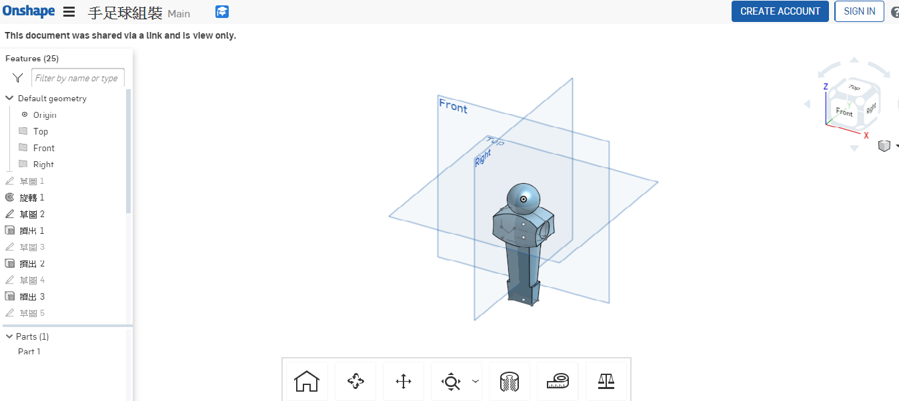

40623141 協同產品設計實習
Home
Site Map
reveal
blog
簡介
手足球程式
玩家vs玩家
玩家vs電腦
電腦vs電腦舊版
電腦vs電腦新版
程式除錯
程式優化
Vrep
Vrep簡化
Onshape
期中
CMSimfly 網站
reveal 投影片
pelican 網誌
課程作業心得
Week1
Week2
Week3
Week4
Week5
Week6
Week7
Week8
Week9
Week10
Week11
Week14
Week15
Onshape練習
筆記
Python 手冊
OnShape 手冊
Fusion 360
Vrep簡化 <<
Previous
Next
>> 期中
Onshape
手足球最初版
但因為和國際尺寸不符在期末報告中並未採用

Vrep簡化 <<
Previous
Next
>> 期中